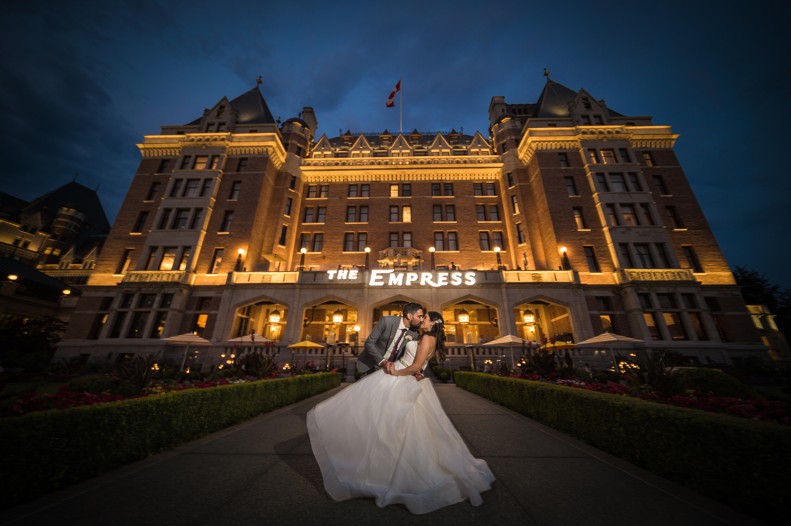
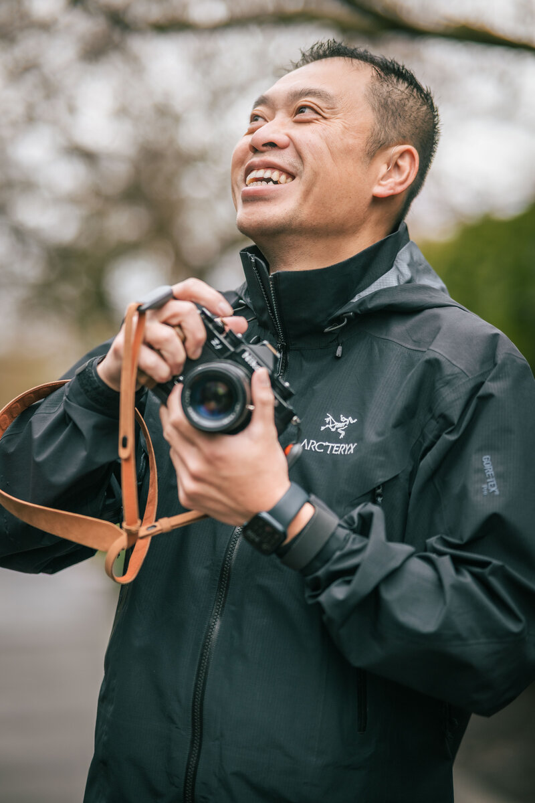
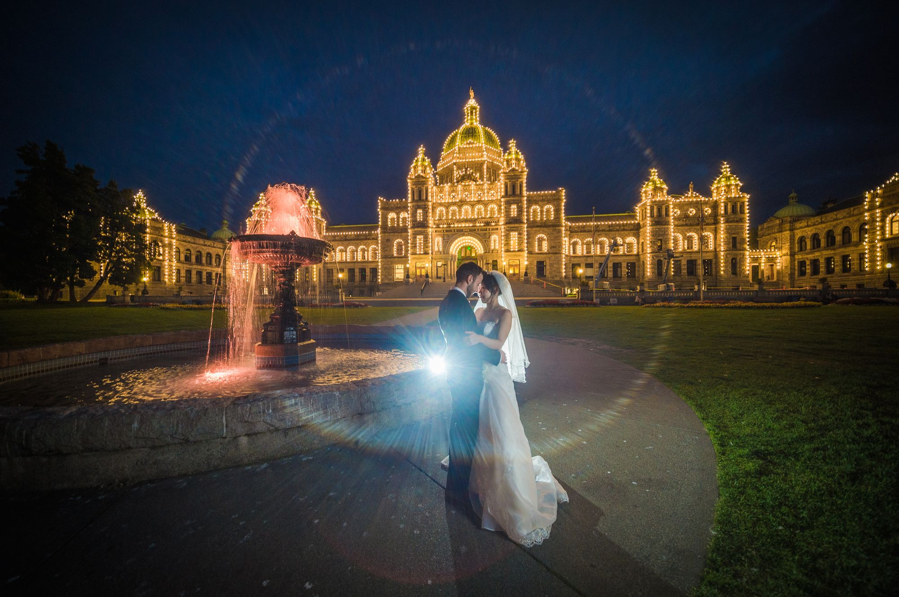

Meet James

The Man Behind the Lens
Vancouver, serving Victoria & Vancouver Island
I'm a husband, a son, a father, and a professional wedding photographer based in Vancouver, serving Victoria and all of Vancouver Island.
Originally, I started from landscapes — chasing light across BC's dramatic coastlines, misty forests, and golden mountain ranges. There's something magical about the way morning light hits a mountain ridge or the silence just before sunset.
Weddings felt like a natural evolution. The same search for beauty, the same patience for the perfect light — but now wrapped in human connection, raw emotion, and love. I get to freeze those fleeting, irreplaceable moments and hand them to you as something you'll treasure forever.
My approach is unobtrusive and authentic. I believe the best photographs happen when people forget I'm there. I capture real laughter, real tears, real glances — the story as it unfolds, not as it's staged.
Gear: Nikon Z9 & Nikon Zf, 9 professional lenses, 4 flashes — always ready for any light, any moment.
Weddings
Years
Coverage
Memories
My Philosophy
Photography isn't just about pretty images — it's about preserving how a moment felt.
The Beginning
It started with sunrises at Mt. Tolmie, long exposures on Tofino beaches, and learning to read the sky like a language. The patience I developed shooting landscapes directly shaped how I approach weddings — always watching, always waiting for the light.
The Evolution
Gradually, landscapes weren't enough. I wanted to photograph people — real people, in real moments. Weddings brought together everything I loved: beauty, emotion, storytelling, and the pressure of a day you can't repeat.
Today
Today, I approach every wedding with the eye of a landscape photographer and the heart of a storyteller. I look for the beautiful light, the unguarded moments, and the genuine emotion that makes your day uniquely yours.
Tools of the Trade
Professional equipment for professional results — no matter the light.
Cameras
Nikon Z9
Nikon Zf
Lenses
9 Professional Lenses
24mm to 200mm
Lighting
4 Professional Flashes
Continuous & Strobe

Ready to Start?
I can't wait to hear about your day. Whether you're planning an intimate ceremony in Victoria or a grand celebration in Vancouver, I'd love to be part of it.
Get in TouchJames brings his landscape photography background to weddings, creating cinematic, atmospheric images with attention to light and composition that many wedding photographers miss.
James has been photographing weddings for 16 years across Vancouver Island and the Lower Mainland in BC, combining his passion for storytelling with technical expertise.
Professional-grade camera bodies and lenses suitable for all lighting conditions, ensuring consistent results regardless of venue or weather.